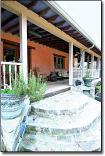
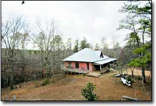
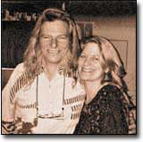
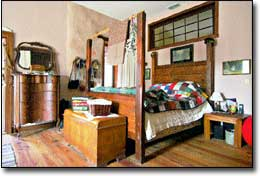
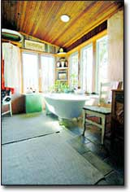

This rural Georgia home balances grace and style with sustainable design.
Near the end of a dirt road that weaves in and out of the woods outside Farmington, Ga., sits a tasteful Southern farmhouse owned by Elise Lang and Michael Pierce. Its wide hip roof and the deep eaves that cover the wraparound porch echo the era of mint juleps, seersucker suits and the sweet twang of banjos.
But look a little closer and you'll find a house that puts a new twist on tradition - the "truth window," a small 6-by-6-inch hole on the north wall of the foyer, says it all: This house is built with straw bales.
Standing in the home's entryway, with its tall ceilings rising to a 20-foot peak and dramatic arched passageways to the home's interior, you can easily overlook the truth window. At first, the unplastered patch seems like an imperfection in this nearly new home, but it reveals what makes Elise and Michael's house so distinctive: This house is a straw bale structure - the first permitted in Oconee County, Ga., according to officials there, and according to the couple, perhaps the first in the state.
Dixie Meets Determination
Elise, a former U.S. Army captain, stumbled across straw bale building while stationed at Fort Huachuca, Ariz. "I was looking for a place to live, and some people told me about Mary Diamond, who was looking for someone to take care of her straw bale home," Elise says.
Although she couldn't leave her post to be a caretaker, Elise took the opportunity to tour Mary's house. The home's amazing insulative qualities appealed to her environmental sensibilities, but Elise distinctly recalls that it was the feeling of the house - the sense that you were embraced, snug and cozy inside the structure - that captured her heart.
"It was the sense of being connected to nature, and the feeling of peace and harmony that inspired me," Elise says. "It's the same feeling I get when I'm in the woods or the mountains; the Earth connection, except it was inside this amazing home."
Homecoming
Fourteen years ago, at the urging of friends, Elise purchased 50 wooded acres with a 650-square-foot passive-solar cabin outside of Athens, home of her alma mater, the University of Georgia. She visited the property when she could but decided that because she was stationed across the country, she needed a caretaker.
Enter Michael Pierce: artist, world traveler and self-proclaimed Supreme Bean (he started what may have been the first tofu processing plant in Germany in the 1980s). In 1991, after returning to his native Georgia from travels in Europe and India, Michael took the caretaking job, living in the little cabin and maintaining the land for Elise. He finally met his landlord three years later, and sparks flew. They maintained a long-distance relationship for several months, until he joined her in Arizona. But Dixie kept calling the native Southerners home - Elise originally hails from New Orleans; Michael's family lives in Macon, Ga. The next year, Elise resigned her Army commission, and the couple settled into the cabin on the Georgia property.
Although the 1970s earth-sheltered cabin met immediate needs for housing, Elise still dreamed of building a straw bale home and turning the old cabin into an art studio for Michael.
She began to read everything on straw bale building she could find, starting with what she says is "the bible of straw bale building" - The Straw Bale House by Athena and Bill Steen (available on Mother's Bookshelf, Page 111). During a 1995 trip to Europe, she toted along this tome, dog-earing page after page and making notes in the margins. When she and Michael returned to the United States, she says, "I made the dozens of phone calls that I was dying to make [while we were] overseas. I had lots of questions that I wanted answered."
Elise's primary concern was the humid climate of northeastern Georgia. All of her readings described homes built in arid climates, and she doubted that straw bale could stay dry in the sultry South. "I decided to call The Last Straw [a straw bale building periodical] to subscribe," she says. "Joanne De Havillan answered, and we started talking about straw bale building. I told her that I'd really like to do it, but my property was in Georgia. And then she said, "Don't you know about the 68-year-old straw bale mansion in Alabama?" - The home De Havillan referred to was the Burritt Museum in Huntsville, a large two-story straw bale house, built in 1936 and still standing strong after almost seven decades. "From that point on," Elise says, "I was encouraged that a straw bale house was possible in the South."
Blending Beauty & Efficiency
From then on, during her commutes to and from work, Elise took mental notes on the homes she passed en route. She says she always has admired the clean, solid lines of hip roofs and the charm of wraparound porches, typical of the South. So when it came time to design her own home, Elise wanted it to reflect such Southern building traditions. "I wanted the house to appeal to a wide audience - to inspire even conventional families to build with straw bales," she says. "I wanted to impress the typically conservative-minded bankers, home appraisers, insurance agents and building inspectors. I wanted this home to give straw bale a good reputation here in the South, and I wanted to present a house that would balance beauty and efficiency."
But she and Michael needed some help to create the home that existed in Elise's mind's eye. They found it in architect Howard Switzer of Linden, Tenn.
“I wanted this home to give straw bale a good reputation here in the South, and I wanted to present a house that would balance beauty and efficiency.”- Elise Lang
Down to Earth Design
Switzer belies the typical architect. First, there's his appearance: he bears an uncanny resemblance to Jerry Garcia, the late Grateful Dead singer and guitarist. Then, there's his history: Fresh out of high school, Switzer started work as a draftsman in an Illinois architectural firm. He eventually moved to Tennessee, where he took the architectural exams and passed all nine on his first attempt.
For 10 years, he lived at The Farm, a famed intentional community on the outskirts of Summertown, Tenn. Today, he continues to teach courses in natural building there. (Visit www.thefarm.org for more information.)
"I always feel that I'm not designing buildings," he says. "I'm helping people design their building. I use my expertise to do sensible planning and safety, taking the design cues from my clients to make their sketches work." His specialty is passive-solar home design, and he and his wife, Katey Culver, have been involved with straw bale building since 1994. And like Elise, he was inspired by Joanne De Havillan.
'I called to talk with Joanne about an article I'd read, and by the time we'd finished the conversation, she had hired me to help with a workshop in North Carolina," he says.
As an architect, Switzer immediately recognized the merits of using straw bales as a building material. Since his start with straw bale construction, he and Culver have consulted on and designed two to three straw bale homes each year. Elise and Michael met him at a weekend straw bale workshop at The Farm, and in 1996, hired him to design their home.
'Elise sent me photos of houses in the area she liked," Switzer says, "and we worked up a design that incorporated those traditional elements, like high ceilings and tall doors. The plan was an organic process that came out of Elise and Michael's needs.'
Setting The Precedent
After the plans were drawn, changed and drawn again, Elise presented them to the Oconee County, Ga., authorities to obtain a building permit. She also gave them copies of approved straw bale construction codes from other states, as well as the names and phone numbers of code officials who had worked with straw bale construction. In addition, she provided videos of fire tests done on straw bale walls and a page from The Last Straw that addressed common concerns about straw bale construction.
'I wanted to share my knowledge with them, because that's what The Last Straw taught me to do: Be prepared to educate, rather than alienate, building code officials," Elise says.
William White, former Oconee County code enforcement director, approved the couple's building permit - it was the first for a straw bale house in that county. "Under the Southern Building Code, which we followed at the time Elise and Michael's house was being built, there's nothing that said you couldn't build [a nonload-bearing straw bale home]," White says. "The design of the house was structurally sound, and everything other than the straw complied with the codes. And there was nothing that expressly forbade using straw in your walls, either.'
Moving From Inspiration to Perspiration
The couple decided to be their own contractor, but Michael was visiting friends in Europe when Elise broke ground in August 1999. "I came home to a huge muddy hole in the ground," Michael says.
Although he recalls having some anxiety about acting as the contractor, Elise says she wasn't worried. "I knew I needed a master carpenter who could say the structural systems, the foundation and the post-and-beams were sound," she says. "I felt we had enough knowledge of straw bale that we could make a good, solid home with the right carpenter." And, true to her persistent nature, Elise found the right person, Bill Perry, a master carpenter who lived just down the road.
Elise and Michael also hired others to help with construction, including Doug Cashman, a friend from Taos, N.M., who helped with the framing and plastering. Masons set the concrete block for the 826-square-foot basement, and Michael followed them, filling all the blocks with rebar and concrete. He originally lugged cement to the blocks in a 5-gallon bucket, but "finally wised-up" and hired a concrete pump truck. "It was the best $300 I ever spent," he says.
Construction progressed quickly. The basement floor was finished in a week, and the framing work got under way the following week. Door and window headers were milled from yellow pine harvested on site.
Massive roof trusses - 45 feet long - were manufactured off site, trucked in and placed by crane. Elise was astonished at the amount of wood they used in their straw bale house. "I couldn't believe it," she says. "Here I was building this straw bale house, thinking that I was saving wood, and then the trusses arrived. In retrospect, I would have designed a simpler roof that required less wood to build.'
The roof sheeting - galvanized metal roofing screwed to purlins - was completed by mid-October.
If you build it, They will come
Elise and Michael found straw bales through their local county extension agent. They timed the cutting to reap the driest harvest, and Michael arranged to temporarily store the bales in a friend's chicken house. "It's crucial to store them properly," Elise says. "People out West don't have to worry about it so much. But that's the secret to straw bale - get the straw dry and keep it dry."
The home's first straw-bale wall raising occurred two weeks before Christmas. Switzer and Culver facilitated the raising and Elise, Michael and a slew of their friends provided labor. Elise says she spent much of her time teaching new recruits the finer points of stacking straw bales, tieing off half-bales and squaring up corners. Both she and Michael say they enjoyed the community-building aspect of straw bale building, although they also admit that it wasn't as efficient as an organized workshop where everyone is on the same schedule.
'We'd just finish having a mini-lecture on tying bales, and a whole new batch of folks would arrive, and I'd have to start over and orient them to the process," Elise says. "But despite the discontinuity in people, we still managed to get almost all the bales stacked in three days."
For stability and to keep the bale walls plumb, long pieces of bamboo were fastened to both sides of the walls. At regular intervals, a stitch of polypropylene twine runs through the walls, cinching the bamboo to the bales like a corset. Now covered with three coats of plaster, the bamboo is barely perceptible.
Native Red Clay Plaster
Red Georgia clay lends warmth to the home's natural lime plaster walls. After experimenting with different plaster recipes, Elise called Switzer for advice. - 'Remember that recipe I gave you?" he reminded me," Elise says. - 'It's 2,000 years old. I think it'll work." - The semipermeable coating sheds water while allowing the straw bale walls to breathe, a crucial component of building with bales.
The clay-lime plaster was mixed on site and applied by hand and trowel; coating the interior and exterior with three layers of plaster was a time-consuming process that took several plastering parties. Michael completed much of the painstaking plastering work himself over several months, finishing the work in mid-March 2002. The sculptor in him craved experimenting with the material, to give the walls an organic feel and texture, and his artist's touch is evident throughout the home. The ripple of curves at the northwest corner of the guest bedroom, the nichos carved out to fit a contemplative clay figure (see "Straw Bale Resources," Page 54) and the long ribs of bamboo that rise subtly from the east living room wall are examples of his work.
Finishing Touches
Michael and Elise are unabashed gleaners; their expert eyes have spotted many treasures at flea markets, estate sales and salvage yards. Their home's glowing hardwood floors were milled from 100-year-old heart of pine beams salvaged from an old Athens, Ga., warehouse. Reclaimed bead board, harvested from a Macon, Ga., warehouse, lends rustic character to the great room's interior walls. The guest bathroom's floors, walls and shower are finished with slate roofing tiles reclaimed from a friend's scrap pile.
The dramatic walnut closet doors that stretch almost to the master bedroom's ceiling once served as pocket doors in a Georgia plantation home. Cleverly concealed behind another set of doors is an Energy Star Frigidaire Gallery series horizontal-axis washer and a Frigidaire high-efficiency dryer.
At 2,400 square feet, the couple's home may be considered large by some green building proponents; even Elise offers some gracious apologies. But, she adds, one of their intentions was to inspire ordinary folks who aren't necessarily concerned about building a home that is gentler to the Earth.
"We wanted to balance beauty and efficiency and show people that you can bring these concepts together in a natural and harmonious way," Elise says.
The home performs exceptionally well during the sweltering Southern summers. A small air conditioner is rarely used, and then only to help wring the humidity out of the living space. The home's high ceilings, ceiling fans, and large doors and windows help keep fresh air circulating throughout the house. The basement, which maintains moderate temperatures year-round, and a fan in the attic to purge hot air, also help the house keep its cool.
The home's thick straw bale walls provide an insulative value about twice as good as a typical wood-framed stud wall insulated with fiberglass batts. Large, south-facing glass doors admit an abundance of sunlight during the winter months to help warm the house, and lighting a fire in the woodstove thwarts the chill. Argon gas-filled, double-pane Anderson doors and windows also contribute to the the home's energy efficiency.
Michael and Elise use propane for their cooking, hot water and backup space heating needs. Their Vestrost Eco-Fridge (also called ConServ) refrigerator requires only 330 kilowatt-hours of electricity per year to operate. (Even Energy Star-rated refrigerators of the same size consume about 10 percent more electricity than this highly efficient model.) An Energy Star Bosch stainless steel dishwasher blends with custom kitchen cabinets.
Natural light washes over almost every room in the house, except for the guest bathroom, which lies within four interior walls. But even there, light seeps in through a small, half-moon sidelight. And all but one room has outdoor access. French doors in the dining room, living room and master bedroom open onto the wraparound deck. The master bath and guest room both access a screened-in porch area on the west side of the house - a haven from gnats and mosquitoes that plague Southern summer evenings.
Setting a Standard
"We set out to build an exemplary straw bale home, one that could set a standard for alternative building in this area," Elise says. Setting an example others could follow meant jumping through some conventional hoops. They received the county's approval and also secured a traditional mortgage on this rather unconventional home. Elise located Aspen Mortgage of Santa Fe, N.M., through a resource article in The Last Straw.
The only stumbling block during the mortgage-approval process was the appraisal - no other local, comparable properties existed for the appraiser to reference in evaluating Elise and Michael's house. Thankfully, Elise says, Stefan Lark, president of Aspen Mortgage, stepped in to save the day. He assisted the local appraiser with the comparables, and after a few consultations, Elise and Michael received their fair market appraisal and mortgage loan.
They then bought homeowners insurance through USAA, a San Antonio-based insurance company that caters to military personnel.
'When I was first interested in straw bale construction," Elise says, "I had contacted USAA about obtaining insurance on a straw bale home, but they had told me "no." Several years later, when Michael and I started building our house, I got this phone call out of the blue. It was USAA, calling to go over my insurance policies. They said, "By the way, we have a note in your file that you inquired about straw bale. We're now insuring it." - Once the plaster work was finished, USAA called to tell Elise and Michael they were getting a discount on their insurance - because their home was now considered "fire-resistant."
During the past two years, Elise and Michael have continued to monitor their home's performance - even going so far as to drill a few small holes in the walls to check for moisture. To date, even the east-facing exterior wall that receives the brunt of the stormy weather remains bone dry.
"We wanted to be so exemplary," Elise says, "so other code officials can come out here and touch the walls, feel the plaster, and understand that straw bale buildings can be successful, even in the South."
Straw Bale Resources
Publications
The Last Straw (periodical)
(402) 483-5135; www.thelaststraw.org
The Straw Bale House (book)
by Athena and Bill Steen,
with David Eisenberg and David Bainbridge
On Mother's Bookshelf, Page 111
Straw bale Architects and Consultants
www.thelaststraw.org/resources/humanresources.html
Development Center for Appropriate Technology (520) 624-6628; www.dcat.net
|
 Photos by Shawn Schreiner The precedent-setting straw bale home of Elise Lang and Michael Pierce. |
 Michael handcrafted this bed as a housewarming gift for Elise. |
 An antique door turned on its side becomes a handsome transom window. Right: Reclaimed lumber on the walls and an old claw-foot tub give rustic charm to the master bathroom. |
|
 |
 |
|